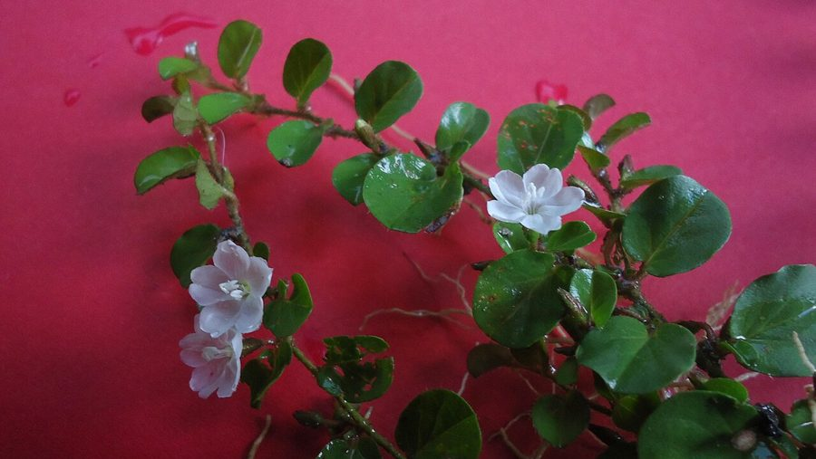

मूषकपर्णीRoundleaf Bindweed
Evolvulus nummularius · Convolvulaceae · FLR-0239

- Scientific name वैज्ञानिक नाम
- Evolvulus nummularius (L.) L.
- Family कुल
- Convolvulaceae
- Hindi हिंदी
- मूषकपर्णी
- Local names स्थानीय नाम
- mushakparni, mooshakparni, roundleaf bindweed, evolvulus
- Status here यहाँ की स्थिति
- native
- Movement आवागमन
- Resident, here all year
- Known from कहाँ दर्ज
- Others have published records from the wider Awadh–Purvanchal plain, none yet from Basti–Ayodhya अवध–पूर्वांचल से दूसरों के प्रकाशित अभिलेख, बस्ती–अयोध्या से अभी नहीं
- IUCN IUCN
- not evaluated
- Review समीक्षा
- audited and independently read
When to look कब देखें
Expected mainly in May, June, July, August, September, October, November. मुख्यतः मई, जून, जुलाई, अगस्त, सितंबर, अक्टूबर, नवंबर में अपेक्षित।
Uses and possibilities उपयोग और संभावनाएँ
“Traditional medicine” means a documented traditional use, not a claim that it works. Nothing on this page is medical advice.
Drawn from the documented uses in the profile below, where each is labelled traditional, current or a research lead. All uses →
Tell it apart from इनसे अलग पहचानें
मूषकपर्णी / Roundleaf Bindweed
Evolvulus nummularius (L.) L. — Convolvulaceae
मूषकपर्णी — गर्मी और बरसात के दिनों में खेतों की मेड़ों, बंजर जमीन और सड़क के किनारे उगने वाली एक नीली-बैंगनी फूल वाली छोटी बेल। पत्तियाँ बहुत छोटी, गोल, एक दूसरे के विपरीत। बेल बहुत ही नाज़ुक, रेंगने वाली या हल्की सी बेलें। पत्तियों के आकार से इसे "मूषकपर्ण" (चूहे की पत्ती) कहा जाता है। आयुर्वेद में इसकी पत्तियों का उपयोग बुखार, खाँसी और तंत्रिका-संबंधी रोगों में किया जाता है।
Quick Identification त्वरित पहचान
| Feature | Description |
|---|---|
| Plant form | Prostrate to ascending annual, 10–30 cm, densely hairy |
| Leaves | Opposite, simple, round to orbicular, 0.5–1.5 cm, entire, soft-hairy |
| Flowers | Small, blue to purple (rarely white), 0.8–1.2 cm across, solitary in leaf axils |
| Stems | Slender, hairy, rooting at lower nodes, creeping |
| Fruit | Small, globular capsule, 3–4 mm |
| The test | Tiny round leaves; small blue-purple flowers; creeping hairy plant |
Field tip: A very delicate, creeping plant with tiny round leaves and small blue-purple funnel-shaped flowers. The round leaf shape is distinctive and gives the plant its name (mouse-foot). Easy to overlook because of its small stature and tendency to grow among other low vegetation.
हिंदी — कैसे पहचानें: बहुत नाज़ुक बेल, गोल पत्तियाँ, बैंगनी-नीले छोटे फूल।
Morphology आकारिकी
Biometrics (typical measurements for plants in Indian wastelands):
| Measurement | Range |
|---|---|
| Plant height/spread | 10–30 cm |
| Leaf diameter | 0.5–1.5 cm |
| Flower diameter | 8–12 mm |
| Stem diameter | 1–2 mm |
| Capsule diameter | 3–4 mm |
Stem: Slender, herbaceous, densely covered with fine, soft hairs, creeping and rooting at lower nodes, becoming slightly woody at the base with age.
Leaves: Opposite, simple, petiolate, orbicular to round (rarely broadly ovate), 0.5–1.5 cm across, entire, densely hairy on both surfaces, soft. The petioles are 2–3 mm.
Flowers: Solitary or paired in leaf axils, on short pedicels, funnel-shaped (characteristic of Convolvulaceae), blue to purple (occasionally pale pink or white), 0.8–1.2 cm across. The corolla is 5-lobed. Stamens 5, inserted on the corolla. The flowers open in the morning and close by afternoon.
Fruit: A small, globular, membranous capsule, 3–4 mm across, containing 1–4 small seeds.
Pubescence: The entire plant is covered with soft, fine, spreading hairs (pilose).
हिंदी: हर जगह बाल। पत्तियाँ बिल्कुल गोल और नरम। बैंगनी फूल सुबह खुलते हैं।
Behaviour & Ecology व्यवहार और पारिस्थितिकी
Evolvulus nummularius is a warm-season annual of Indian origin that grows in open, disturbed habitats from May through November. The plant does not climb vigorously and remains prostrate or weakly ascending. It is not strongly competitive with established crops but establishes readily in fallow fields, field margins, and sandy wastelands. The plant prefers well-drained, sandy, or gravelly soils and is drought-tolerant once established.
The flowers are visited by small insects, including flies and tiny bees. The plant is self-compatible and produces viable seed prolifically.
हिंदी: गर्मी की ऋतु में तेजी से बढ़ता है। सूखी ज़मीन पर भी चल सकता है। बहुत बीज देता है।
Life Cycle / Phenology जीवन चक्र
| Month / season | Event |
|---|---|
| May–June | Seed germinates with warming soil and early rains |
| June–August | Vegetative growth; plant forms spreading mat |
| August–October | Flowering; continuous bloom throughout warm season |
| October–November | Fruiting; seed maturation; plant begins to senesce |
Seeds are long-lived and remain viable for several years in soil. The plant is an obligate warm-season annual and does not survive frost.
हिंदी: मई-जून में अंकुरण, जुलाई-सितंबर में फूल, अक्टूबर तक बीज।
Associated Species / Interactions संबंधित प्रजातियाँ
- Wasteland companions: Found with other warm-season herbs and grasses in fallow fields and disturbed areas.
- Field margin specialist: Often the first plant to colonise bare, disturbed soil along field edges and canal banks.
- Seed dispersal: Seeds are dispersed by water, on farm machinery, and occasionally by livestock.
Pests and Diseases कीट और रोग
- No specific serious pests; leaves are occasionally eaten by small herbivores.
- Generally healthy; fungal diseases are rare but leaf spot may occur in very humid conditions.
Agricultural / Human Relevance कृषि प्रासंगिकता
As a weed:
Evolvulus nummularius is a minor weed of warm-season cultivation in eastern UP. The plant is weak and does not compete strongly with crops, so it is rarely a significant pest. It is easily controlled by hand-weeding and does not re-emerge vigorously if disturbed.
Traditional medicinal use (documented traditional uses; not medical advice):
- Fever and respiratory complaints: In Ayurvedic tradition, the leaves of Evolvulus nummularius are used to treat fever, cough, and cold. The decoction or juice is said to have antipyretic and expectorant properties.
- Nervine tonic: The plant is listed in some Ayurvedic texts as a nervine tonic (brain and nerve strengthener) and is used in formulations for anxiety and stress.
- Skin complaints: Traditional application to skin rashes and irritations is recorded.
The use is traditional and is recorded in Ayurvedic pharmacopoeias such as Chopra et al. (1956), but has not been subjected to rigorous clinical validation.
Today. The plant is a minor weed of wastelands and field margins, occasionally gathered for traditional medicinal use.
Research direction (a lead, not a result). The traditional medicinal uses of Evolvulus nummularius have not been systematically validated; phytochemical and pharmacological investigations could determine whether traditional claims have a biological basis.
हिंदी: बुखार और खाँसी के लिए पारंपरिक दवा। गंभीर खरपतवार नहीं।
Expected Locally स्थानीय रूप से अपेक्षित
Not a field record. Written from published accounts for eastern Uttar Pradesh. No confirmed local sighting yet — if you have seen it, that is what the atlas needs.
अभी तक स्थानीय पुष्टि नहीं। यह विवरण प्रकाशित स्रोतों से है, किसी अवलोकन से नहीं।
To be expected in field margins, wastelands, and fallow fields throughout Basti district from June through November. GBIF holds published records from the wider Awadh–Purvanchal plain. A first local record would document the round leaf shape and blue flowers.
Distribution वितरण
Global range: Native to tropical India and cultivated in tropical Africa and Asia; widely distributed in tropical and subtropical regions.
In India: Widespread in all states, from the plains to about 2,000 m in the Himalaya.
In Uttar Pradesh: Common in wastelands and field margins across the state.
In Basti district / eastern UP: Expected in warm-season fields and wastelands; GBIF records from the wider region.
Research Questions शोध प्रश्न
Anyone can investigate these | कोई भी इन प्रश्नों की जाँच कर सकता है
- How many seeds does one plant of Roundleaf Bindweed produce in a season, and how far can those seeds travel on farm machinery? — Grow one plant in isolation; count mature seeds; estimate dispersal distance.
- Does the plant grow taller or spread wider on sandy soils versus clay soils, and where is it most common in your village? — Monitor growth in both soil types; map distribution in your area.
- Which insects visit the blue flowers of Roundleaf Bindweed in July and August, and how often do they visit? — Observe flowering plants for 30 minutes in morning and afternoon; count visits.
- Does extracting the leaves and testing them for fever-reducing properties show any effect compared to a control? / क्या इसकी पत्तियों का रस बुखार कम करने में मदद करता है? — (Note: consult traditional health worker; this is exploratory research only, not medical treatment.)
- If you store Roundleaf Bindweed seeds in different conditions (wet, dry, cold), do they all germinate with the same timing the following year? — Store seeds in five different conditions; test germination rates and timing.
Similar Species मिलती-जुलती प्रजातियाँ
| Species | How to tell apart | हिंदी |
|---|---|---|
| Field Bindweed (Convolvulus arvensis) | Much larger plant; white or pink flowers; wider leaves | बहुत बड़ा, सफेद-गुलाबी फूल |
| Ipomoea species | Larger climber; larger flowers; different leaf shape | बड़ी बेल, बड़े फूल |
| Morning glory species | Larger plants; larger flowers and leaves | बहुत ज्यादा बड़ा सब कुछ |
Field rule: A tiny creeping plant with round coin-sized leaves, small blue-purple funnel-shaped flowers, and a hairy, delicate stem is Roundleaf Bindweed.
Taxonomy & Classification वर्गीकरण
Original description. Originally described as Convolvulus nummularius by Linnaeus in 1753, and transferred to Evolvulus by Carl Ludwig Willdenow (1809). The epithet nummularius means "coin-like", referring to the round leaves.
Subspecies. Monotypic — no subspecies currently recognised.
Family and order placement. Convolvulaceae, order Solanales. The genus Evolvulus holds about 100 species, mostly of tropical origin. Most species are small annual herbs with small flowers, in contrast to the larger-flowered Ipomoea and Convolvulus genera.
Phylogenetic notes. Evolvulus nummularius is widespread and appears to be a basal member of the genus.
IUCN status rationale. Not evaluated. Widespread and native; not assessed.
Photo Gallery फोटो गैलरी
Photos needed आवश्यक फोटो
- [ ] Whole plant showing creeping habit (पूरा पौधा)
- [ ] Close view of round leaves (गोल पत्तियाँ)
- [ ] Blue-purple flowers (बैंगनी फूल)
- [ ] Seed capsule (फल)
No photos yet — add field photos to media/species/roundleaf_bindweed/ and run node scripts/sync_photos.js.
References संदर्भ
- Linnaeus, C. (1753). Species Plantarum. Laurentii Salvii, Holmiae, Vol. 1, p. 143. [original description as Convolvulus nummularius]
- Willdenow, C.L. (1809). Enumeratio Plantarum Horti Botanici Berolinensis, Supplementum. Berlin. [transfer to Evolvulus]
- Hooker, J.D. (1880). The Flora of British India, Vol. 4. L. Reeve, London.
- Duthie, J.F. (1903). Flora of the Upper Gangetic Plain and of the Adjacent Siwalik and Sub-Himalayan Tracts. Government Printing, Calcutta.
- Chopra, R.N., Nayar, S.L. & Chopra, I.C. (1956). Glossary of Indian Medicinal Plants. CSIR, New Delhi.
- GBIF Occurrence Data — Evolvulus nummularius, India (2026).
Source file: species/flora/weeds/roundleaf_bindweed.md